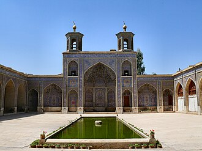

Giới thiệu
La mosquée Nassir-ol-Molk est située à Chiraz dans la province de Fars en Iran.
مسجد نصير الملك أو المسجد الوردي هو مسجد تقليدي في شيراز، إيران، ويقع في جوادي إي عربان بالقرب من مسجد شاه جراغ الشهير. تم بناء المسجد في عهد القاجاريين، ومفتوح للصلاة حتى الآن تحت رعاية مؤسسة ناصر الملك للأوقاف. بني المسجد بأمر من ميرزا حسن علي ناصر الملك، وهو واحدًا من أمراء سلالة قاجار، في عام 1876 وانتهى بناءه في عام 1888. صممه كلا من محمد الحسن ومحمد رضا كاشي باز الشيرازي. تزين واجهة المسجد الزجاج الملون، ويوجد بها خمس فتحات أو بالفارسية panj kāseh-i وهو تصميم تقليدي يخص العمارة الفارسية. يشتهر المسجد بالمسجد الوردي نظرًا لإستخدام بلاط وردي اللون في تصميمه الداخلي.
The Nasir-ol-Molk Mosque, also known as the Pink Mosque, is a mosque located in Shiraz, in the province of Fars, Iran. Completed in 1888 CE, the Qajar era mosque is located in the Gowd-e Araban district of Shiraz, south of Lotfali Khan Zand Street, next to the Shāh Chérāgh Mosque.
Nasırülmülk Camii, İran'ın Şiraz şehrinde bulunan geleneksel camii.
Masjid Nasir al-Mulk, juga dikenal sebagai Masjid Merah Muda, adalah sebuah masjid tradisional di Shiraz, Iran. Masjid ini terletak di dekat Masjid Shāh Chérāgh. Masjid ini dibangun pada masa pemerintahan Dinasti Qajar di Iran.
Die Nasir-ol-Molk-Moschee, auch bekannt als Rosafarbene Moschee, ist eine Moschee in Schiras, Iran. Sie liegt am Gowad-e-Arabān-Platz in der Nähe der Schāh-Tschérāgh-Moschee.
La Mezquita Nasir-ol-Molk (en persa: مسجد نصیر الملک), también conocida como la Mezquita Rosa, es una mezquita tradicional de Shiraz, Irán. Está localizado en el distrito de Gowad-e-árabeān, cerca del santuario de Ahmad Ibn-Musa o Shāh-e Chérāgh.
La moschea di Nasir ol Molk, spesso anche nota come moschea rosa, è un luogo di culto islamico a Shiraz, Iran. Essa è localizzata nel distretto di Gowad-e-Arabān, vicino alla moschea Shah Ceragh. Questa è una delle moschee più fotografate ed eleganti dell'Iran meridionale.
De Nasir al Molkmoskee, ook gespeld als Nasir al-Moelkmoskee, is een moskee in de Iraanse stad Shiraz, gelegen nabij het Goade-e-Arabanplein en nabij het beroemde mausoleum Sjah Tsjeragh, de Vakilmoskee en de Vakilbazaar. De moskee werd gebouwd tussen 1876 en 1888 in opdracht van de Kadjaarse leider Mirza Hasan Ali Nasir al Molk. De ontwerpers waren Mohammed Hasan-e-Memar en Mohammed Reza Kashi Paz-e-Shirazi. Tegenwoordig wordt de moskee beheerd door de gelijknamige Nasir al Molkstichting.
Мечеть Насир оль-Мольк — одна из древнейших мечетей Шираза в Иране. Находится в историческом центре Шираза на улице Лотф Али-шаха в непосредственной близости от мавзолея Шах-Черах. Мечеть построена в 1877—1888 годах по заказу Мирзы Хасана Али Насир оль-Молька из династии Каджаров архитекторами Мирзой Мохаммадом Хоссейн-Мемар и Мохаммадом Резой Каши Пазе Ширази.
มัสยิดแนซีโรลโมลก์ หรือ มัสยิดชมพู เป็นมัสยิดเก่าแก่ในเมืองชีรอซ ประเทศอิหร่าน ตั้งอยู่ใกล้กับชอฮ์แชรอฆ มัสยิดเป็นที่รู้จักมากจากงานกระจกสีภายใน และองค์ประกอบทางสถาปัตยกรรมแบบดั้งเดิมอื่น ๆ เช่นการออกแบบ แพนจ์คอเซ
Nasir al-Mulks moské, även känd som Rosa moskén, är en moské i Shiraz från qajarernas tid som blev klar år 1888. Moskén byggdes under Nassredin Shahs tid och på order av Mirza Hasan Ali. Moskén är känd som Rosa moskén på grund av stor kvantitet av rosa kakel i den. Den är även känd för sina glasmålningar.
Trên bản đồ
Tài liệu và đường dẫn
- Wikipédia — Français
- Wikipédia — العربية
- Wikipédia — English
- Wikipédia — Türkçe
- Wikipédia — Bahasa Indonesia
- Wikipédia — اردو
- Wikipédia — Deutsch
- Wikipédia — Español
- Wikipédia — Italiano
- Wikipédia — Nederlands
- Wikipédia — 中文
- Wikipédia — 日本語
- Wikipédia — Русский
- Wikipédia — ไทย
- Wikipédia — Svenska
- Wikidata — Q1962312
Dữ liệu: Wikidata (CC0), cập nhật 3 tháng một lần. Năm là niên đại xây dựng sớm nhất được biết của công trình: với một công trình về sau mới trở thành thánh đường (như Hagia Sophia), đó là năm của công trình ban đầu. Ảnh: Wikimedia Commons, tác giả và giấy phép ở trang của từng ảnh.